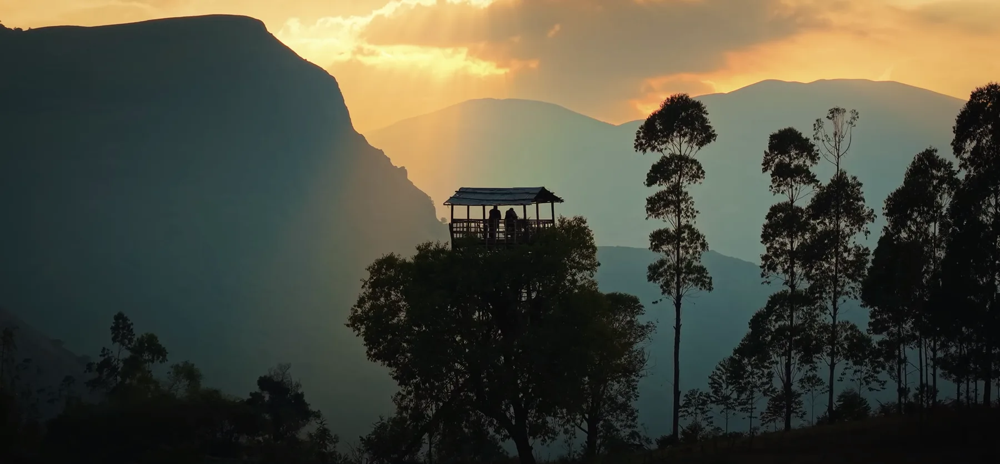

Phone & WhatsApp
+91 97781 32603
Packages, stays, sightseeing, jeep safaris and transport enquiries.

One conversation starts the journey
Reach us directly for packages, stays, resorts, mud-house experiences, jeep safaris, sightseeing and local transport arrangements.
Contact us directly
Call either number or start a WhatsApp conversation. Include your dates, group size and the arrangements you need.
Phone & WhatsApp
Packages, stays, sightseeing, jeep safaris and transport enquiries.
Phone & WhatsApp
Use this number for the same booking and travel arrangement enquiries.
Email bookings
Email a detailed request and include your travel dates, group size and stay preferences.
Email your enquiryWhat happens next
Opening WhatsApp or email does not confirm that an enquiry was received. Send the message, then we check what is currently possible and share relevant details before asking you to decide.
Send the essential trip details using your preferred contact method.
Review suitable stays, routes and services after access and availability are checked.
Check pricing, inclusions, timings and terms before making a booking decision.
Privacy note: Details shared by phone, WhatsApp or email are used to respond to your travel enquiry. Please avoid sending identity documents, payment-card information or other unnecessary sensitive information.